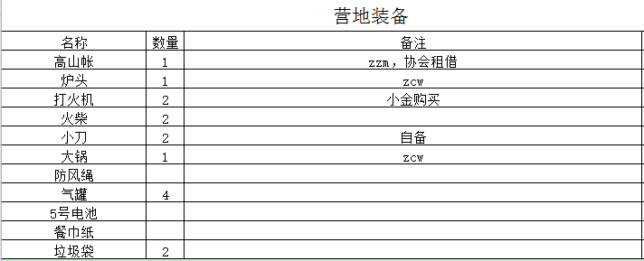

发信人: crazycams(嗡嗡嗡), 信区: outdoor
标 题: 国庆-日果冷绝峰（龙脊峰）攀登简报
发信站: 饮水思源 (2016年12月20日01:29:29 星期二)
时间：2016年10月29日-10月5日
攀登山峰：日果冷绝峰，又名龙脊峰
海拔：一说5523米，实际等高线看起来像是5440米
位置：四川省阿坝州小金县结斯沟
人员：hm，zzm，zcw
攀登方式：Alpine style（阿尔卑斯式攀登）
计划日程：
9月29日 上海-成都，宿成都
9月30日 成都-日隆-结斯沟向花村
10月1日 向花村-BC
10月2日 BC-C1
10月3日 C1-冲顶-C1
10月4日 BC-向花村或者日隆
10月5日 回到成都
以上是计划安排行程，实际行程多变复杂。先是9月28号得知zzm在29号要参加华为的面试
，不得已在成都停留的时间变成了2天，进山时间推迟到十月一号，所以估计进山路上会堵
车。然后是在山上发生的一些其他情况，这个在后面细说。不过最终的结果是我们在推迟
一天进山的情况下仍然在5号回到了成都。
下面还是说说路线吧，这个好像比较有趣，红色部分为原计划路线。
screen.width - 200){this.width = screen.width - 200}">
进山的路线：
坐了1号早上6：30成都茶店子客运站坐成都-小金的班车，恰逢巴郎山隧道开通，本想体验
一下传说中的三个小时到日隆镇，然而在隧道口以及隧道里堵了将近两个小时。让客车司
机在陈麻子桥停车，我和hm在附近找了个小饭店吃饭，zzm由于是7点车所以晚到了一个多
小时。等车的过程中顺便检查了帐篷，发现外账顶和帐底有破损，赶紧补上！4点多在饭店
等到杨师傅来接我们的车，沿着结斯沟一路抵达向花村杨师傅家。
screen.width - 200){this.width = screen.width - 200}">
藏在大山深处的向花村
2早上9点，将装备放上杨师傅的拖拉机，开始进山。三个人在颠簸的山路上享受高原的阳
光和清新的空气，出发后5公里左右，手机信号消失，和外界也就彻底失去了联系。
screen.width - 200){this.width = screen.width - 200}">
坐拖拉机进山
在到达杨师傅兄弟的牛棚那里取得对讲机，并和他约定5号早上8点开拖拉机在红杉林那里
接我们。同时也遇到另外两只队伍，发现那个两人队伍居然是在双桥沟攀冰遇到的小米和
古袅袅，简单询问了一下，路线和我们几乎一样。12点左右到达红杉林，拖拉机也不能再
走了，付完车钱，吃过午饭，上包正式开始攀登。跟着另外连个队伍请的背夫往BC走，走
了半个小时比对航迹发现被背夫们带错了路，其他队伍商量着要切回正常路线，我们却考
虑是是将错就错，从红杉林那里直接上，但是这个路线以前从来没有资料显示是可以建立
BC的，三个人仔细分析了下地形决定和其他队伍分开，从红杉林直接往上走，建立一个离
冰川较近的BC。时间大概是下午4点30分，历经三个半小时后也算是顺利到达了BC，海拔在
4400米。由于BC附近没有什么平地，只能找个相对平缓一点的斜坡勉强扎营。附近有小溪
，取水十分方便。由于8月刚刚登过山，三人并没有高反，状态不错，不过一天上升将近1
500米确实还是有点多了，所以晚上并没有睡得很好。
screen.width - 200){this.width = screen.width - 200}">
screen.width - 200){this.width = screen.width - 200}">
BC路线示意
screen.width - 200){this.width = screen.width - 200}">
BC营地
3号早上9点从BC出发，朝着能看见冰川的方向走，一路都是碎石坡，并没有什么难点，在
冰川之前最后一个碎石坡时休息了下，拍了合照就径直往C1走了。11点30左右抵达冰川，
海拔大概在4900米，在冰川上平整了一块雪地用来扎营。吃饭，休息了一阵之后收拾装备
去探探明天的路线，顺便观察一下前阵子的大雪对攀登是否有影响。3点多从C1出发，由于
雪况不错，坡度也不陡，也就没有结组了。上到冰川就看见很大的雪崩痕迹，估计是之前
的降雪都在这几天晒化了，所幸算是来对时间了，盼望着上方雪槽里的雪都掉干净了，这
样也就几乎没有雪崩的概率了。绕开雪崩区继续往上走，一路上也遇到几个较大的冰裂缝
，小心避开之后到达海拔5050米的地方，看太阳渐渐偏移，开始起风了，于是也就不打算
继续上了，一来路线基本看清楚了，二是这个时候再往雪槽那边走，担心通过冰川下方时
遇到板状雪崩和落石。在C1讨论第二天冲顶的计：凌晨2点出发，用40-50min到达雪槽根部
后，zzm先领攀，三个人runing belay到第一个平坦的冰川下面，然后交替保护换hm继续领
攀翻到冰川到正面的雪坡，最后一部分由zcw领攀翻上冰川到达山脊。吃过晚饭，三个人也
就躺下了，聊天，扯淡，吹牛B之后差不多到了8点多，hm就坐起来说自己肺上不舒服，感
觉躺着比较难受，我们也有点慌了，害怕是不是肺水肿，赶紧听他的呼吸声音，并没有锣
音。在吃了布洛芬之后继续观察到10点，发现仍然没有好转，于是三人决定，事不宜迟，
撤，保命要紧。撤到BC已经是12点多了，本打算在BC休息一下继续撤到红杉林，结果刚从
BC出发几分钟便发现了一只狼，感觉不妙，也就怂了，就地在BC扎营，等到天亮再撤。
screen.width - 200){this.width = screen.width - 200}">
在C1下方的碎石坡
screen.width - 200){this.width = screen.width - 200}">
C1营地
screen.width - 200){this.width = screen.width - 200}">
大面积的雪崩痕迹
screen.width - 200){this.width = screen.width - 200}">
遇到的冰裂缝
screen.width - 200){this.width = screen.width - 200}">
计划的冲顶路线，绿色圆圈为保护站的位置
4号早上下撤，在碎石坡那里发现一条沿着河的小路，一直沿着小路走，很快就回到出发的
地方。由于一直用对讲机联系不上杨师傅的兄弟，我们也只好沿着原路一直走，走了差不
多两个多小时终于看了牛棚，感慨坑爹之余好歹也顺利坐上拖拉机了。
screen.width - 200){this.width = screen.width - 200}">
下撤前在BC合影
screen.width - 200){this.width = screen.width - 200}">
撤到红杉林休息
5号一早拼了车从向花村直接回到成都，必须火锅走起。6号坐一大早的动车回上海，整个
攀登结束。
附上攀登的装备清单：
screen.width - 200){this.width = screen.width - 200}">
screen.width - 200){this.width = screen.width - 200}">
 screen.width - 200){this.width = screen.width - 200}">
--
其实攀岩就是一种生活，或近或远，或难或易，爱者自爱，无关名利你我
※ 来源:·饮水思源 bbs.sjtu.edu.cn·[FROM: 45.32.62.195]
※ 修改:·crazycams 于 2016年12月20日01:30:34 修改本文·[FROM: 45.32.62.195]
※ 修改:·crazycams 于 2016年12月20日10:46:21 修改本文·[FROM: 58.196.163.227]
※ 修改:·crazycams 于 2016年12月20日13:54:44 修改本文·[FROM: 58.196.163.227]
|